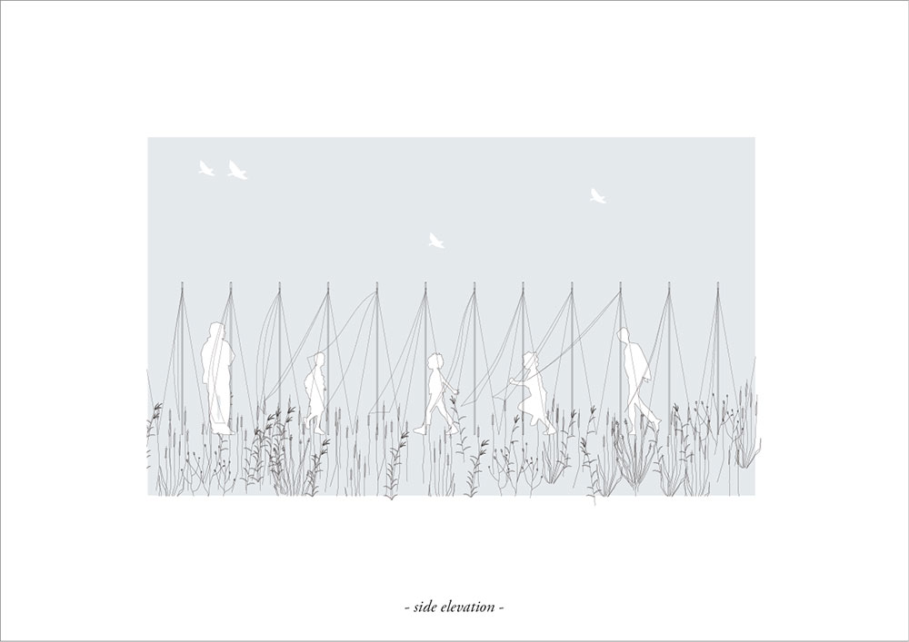
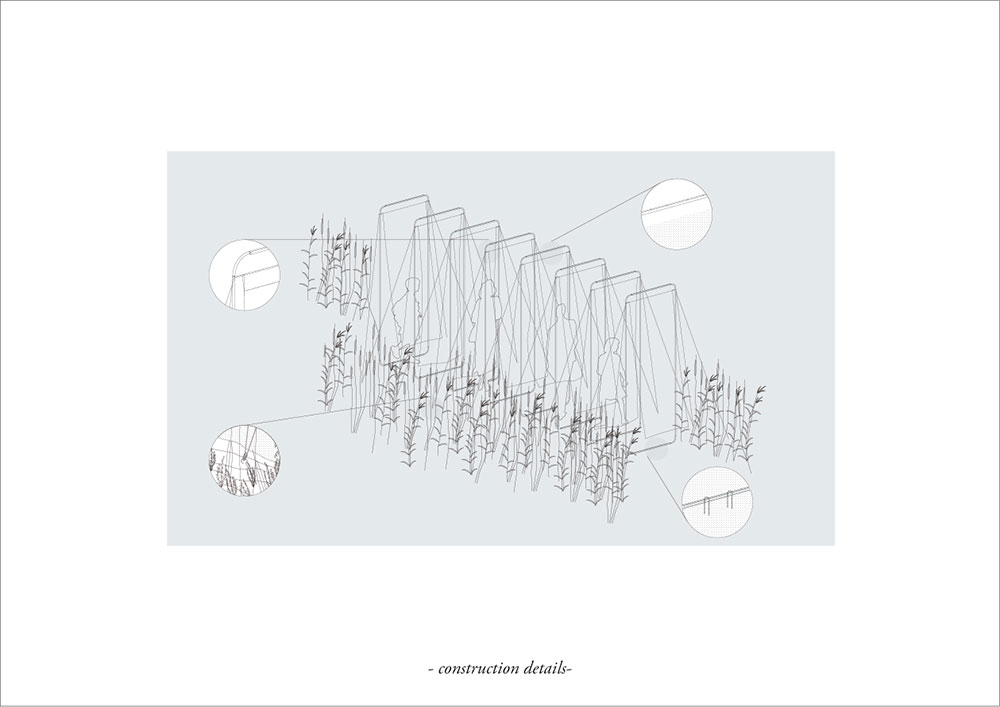
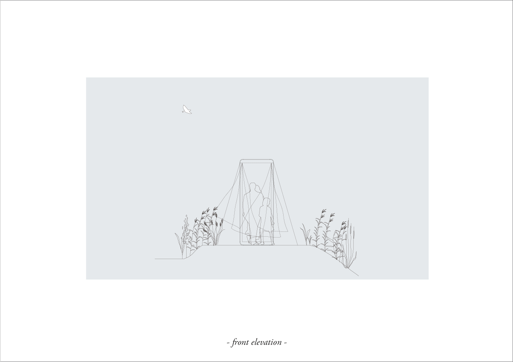
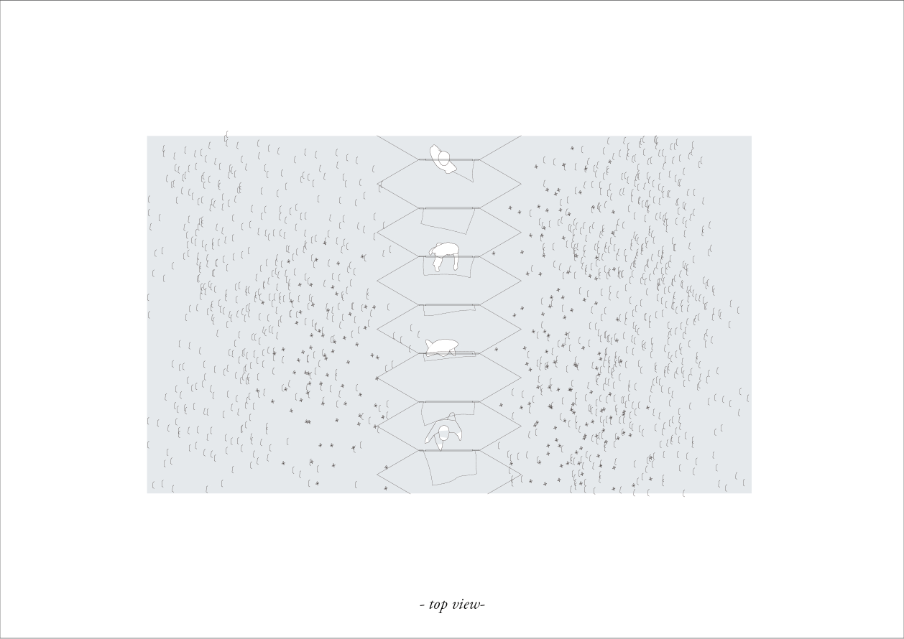
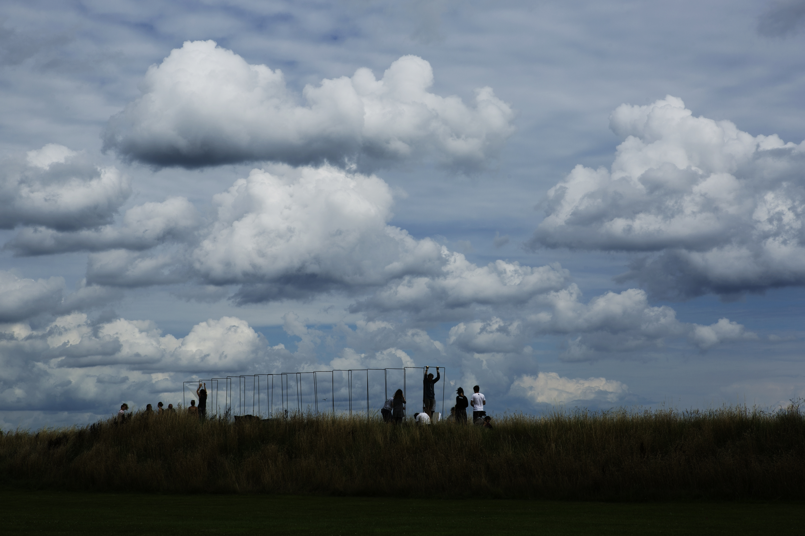
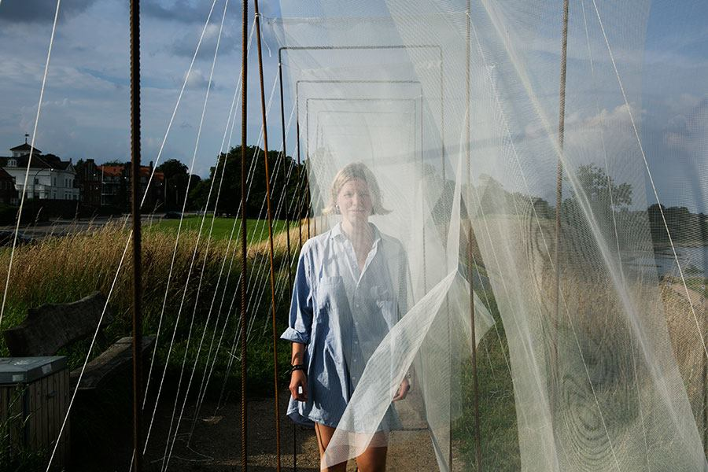

unline
The proposal is a tool to pronounce a statement towards EASA's 2017 edition theme: hospitality. Thus, the design symbolizes de dematerialization of boundaries. It is conceived as a process that will evolve while its construction. Unline is made by a sequence of metallic frames distributed along a line which links the sea and the city. They are connected through fabric, which is disposed in a longitudinal way and tight to the frames only on its upper part. Thus, textile does at the same time create a sense of boundary and express the dematerialization of the wall. Unline is a door to the landside, a corridor with a strong linear direction that changes its shape constantly. Each walking through is a unique experience shaped by the wind.





Photo by: Josep Maria Solé Gras

Photo by: Alexandra Kononchenko

❮
❯
Photo by: Alexandra Kononchenko